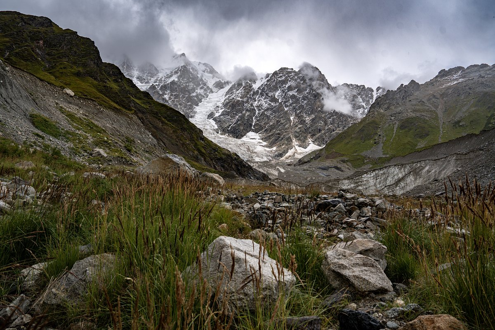

4. Пик Ветров
Место проведения: Скальное плато «Высокий Утес»
Продолжительность: 14 часов
Уровень сложности: Высокий
Ближайший выезд: 04.10.2026
Стоимость: 3 800 руб.
Описание: Интенсивный и долгий подъем на вершину холма, откуда открывается потрясающий вид на слияние двух крупных рек. Требуется хорошая физическая форма.
Забронировать этот тур ← Назад в каталог